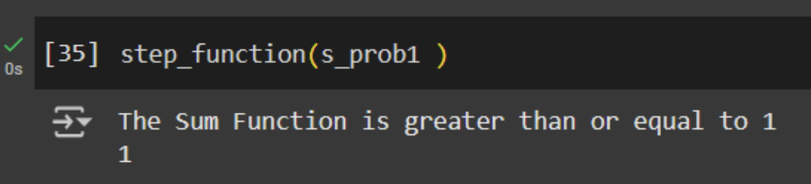
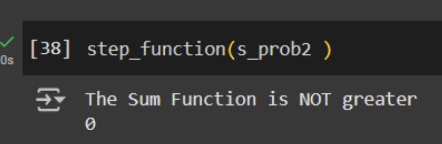

Introduction to Artificial Neural Networks
Formative Activity
Perceptron Activities
This unit’s activity consisted of playing around with the concept of perceptrons and experimenting with its implementation in Python. Based on some Jupyter Notebooks notebooks, I was able to put notions to test by simply changing variables in a code.
Perceptrons are a rudimentary type of Neural Network (NN). It works with two variables: inputs and weights. In this context, weighting means scaling the importance of each input. With these two, a weighted sum is calculated, which in turn is passed through an activation function to give a binary result. The activation function used in the notebook is a step function and its outcome is either 1, if the weighted sum is equal or greater than 1, or 0, if the weighted sum is negative.
I played around with values to get the step function to return 1:
inputs = np.array([0.1, 3])
weights = np.array([0.6, 0.8])

By changing the weights to include a negative number, the step function does not activate and it returns 0:
weights = [-1, 0.1]
